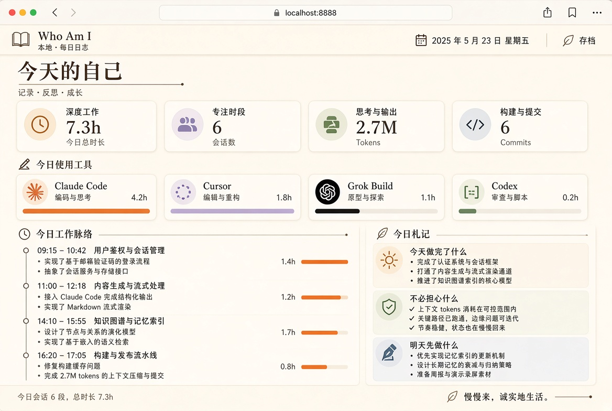

烧了很多 token
工具一直在转，晚上却说不清今天做成了什么。用量榜把活跃度当成了自我价值。
不必焦虑。知道自己到底有没有为之努力。 Who Am I 读取你电脑上已经存在的 AI 编程痕迹，写成一份人话日报。 默认情况下，提示词、源码、密钥都不会离开这台电脑。

本机日报窗口。时长是有痕迹的时间窗，不是墙钟打卡。示例日用来看成品，不会冒充你的一天。
工具一直在转，晚上却说不清今天做成了什么。用量榜把活跃度当成了自我价值。
日历是空的，于是觉得自己荒废了一天。空白并不会自动等于偷懒。
| 层 | 问题 | 数据从哪来 |
|---|---|---|
| 事实 | 用了哪些工具、多久、提交了什么 | 本机会话日志、Git |
| 身份 | 我想要什么、正在追什么、明确不做什么 | 你写的 identity.yaml |
| 叙述 | 今天如何理解自己 | 本地规则，或你自己的模型 |
打开过不等于做完了。完成项看提交和交付，会话只是痕迹。
| 工具 | 本机来源 |
|---|---|
| Claude Code | ~/.claude/projects/**/*.jsonl |
| Codex | ~/.codex/sessions/**/*.jsonl |
| Grok Build | ~/.grok/sessions/…/summary.json 与 updates.jsonl |
| Cursor | ~/.cursor/chats 与 ai-tracking |
| Git | 说明书里登记的仓库，或当前目录 |
需要 Bun。独立窗口另外需要一次 Rust 工具链，用来编 Tauri。
git clone https://github.com/Lniosy/who-am-i.git cd who-am-i bun install bun run wai init bun run wai today bun run wai serve # 浏览器 http://127.0.0.1:8787 bun run app # 独立日报窗口